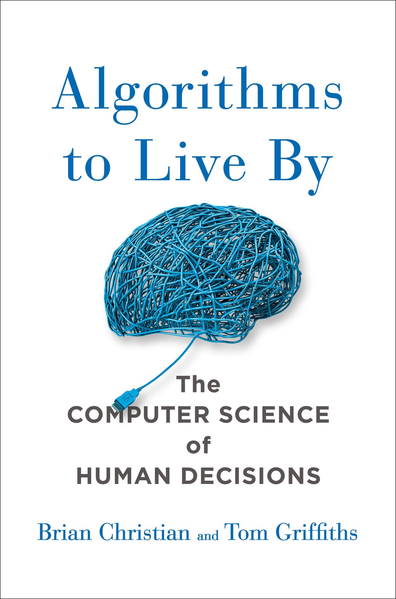

Algorithms to Live By: The Computer Science of Human Decisions
Author : Brian Christian and Tom Griffiths
As every busy college student knows, our lives are constantly being constrained by limited time and space — what should be accomplish in a day? What is okay to leave undone in a lifetime? How much messiness and disorganization is an acceptable amount? In Algorithms to Live By, author Brian Christian and cognitive scientist Tom Griffiths describe how simple, yet precise, algorithms like those used by computers can also untangle important human questions. In fascinating chapter after fascinating chapter, the two explain everything from how to have better gut feelings, to knowing when to leave things to chance, to dealing with an overwhelming number of choices, to figuring out how to best communicate with others